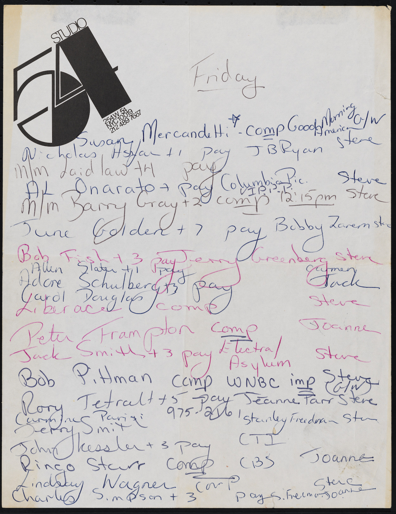
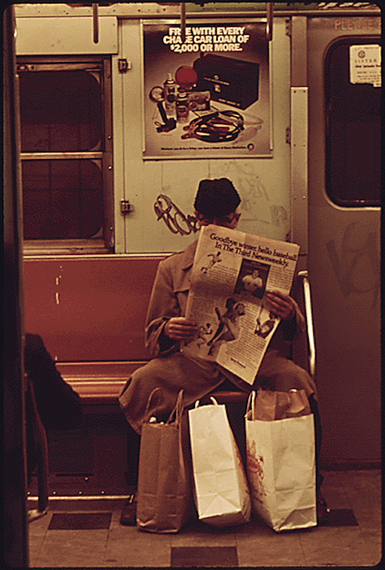
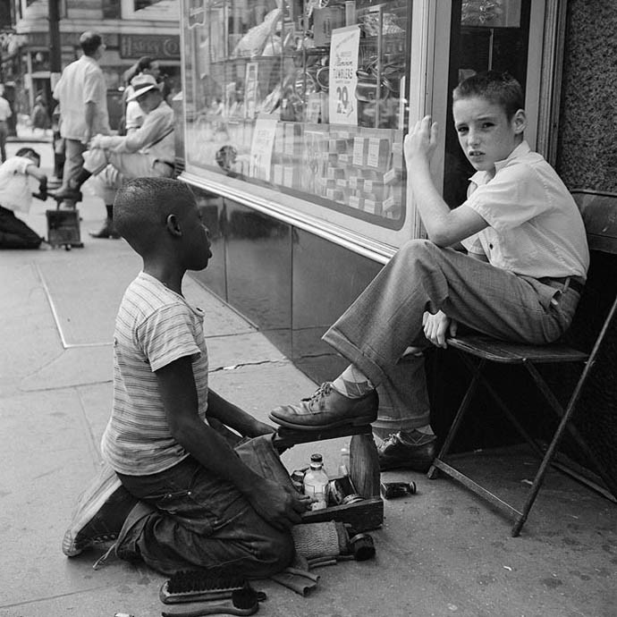
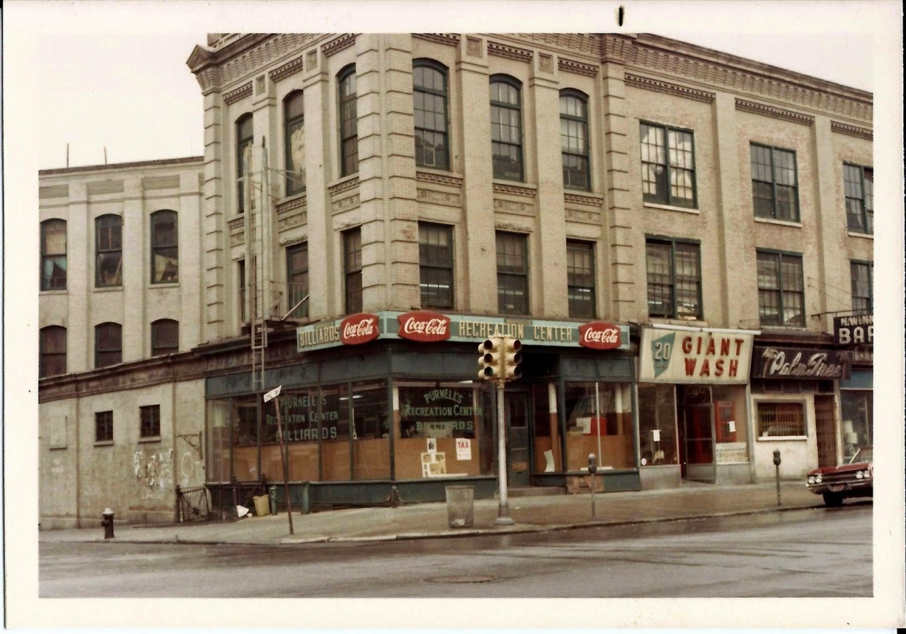
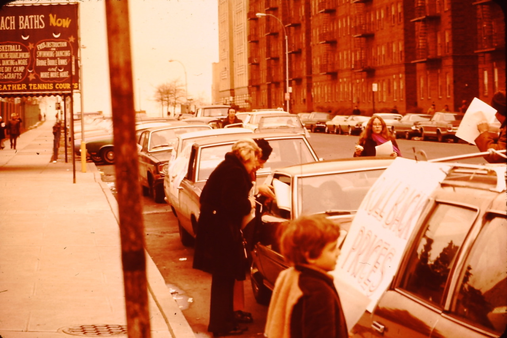

Jim Henson and Bert, 1971
Jim Henson and Bert, 1971
Saul Leiter Canopy, New York City 1957 c.1957

Tudor City, 1930
Saul Leiter Harlem, New York 1960

Gay pride parade, 1973

Mott Street, 1978

Studio 54 guest list, 1978. Liberace, Peter Frampton, Ringo Starr, and Lindsay Wagner!

Неспящие в Торонто - Brooklyn 1967. Photographer William Gedney

NYPL
I love your loving my blog. Thank you!

Manspreading on the subway, 1974.
In 1980 there was a transit strike in the City, and people took to the streets on their bikes. Mayhem ensued.

A recent visit to the Soldiers and Sailors monument. Nostalgic.
13th and A, 1984

Shoe shine, 1954

E. 86th Street in 1975

The City’s on fire
Frankenhooker (1990)

East 6th Street, late 70s.

The Savage Skulls Street Gang, The Bronx, 1979
via reddit
Coney Island (1968)

Oh!

Midtown, Manhattan, New York City 1965
23rd St and 8th Ave, 1976

Coney Island, 1968

Kids on W. 92nd Street, 1979

Man in the Rain, New York City, 1952.
Photographer Ruth Orkin

Amsterdam Ave at 150th St, 1970

Coney Island 1975

Nuns on 57th, 1965
Broadway between W48th and W49th, ca. 1980
Brighton Beach, Brooklyn, 1970, Postcard: “Gastronom Moscow”
89th and Broadway, 1985. The New Yorker movie theater being demolished.

The wall of the New Yorker movie theater midway through demolition in 1985. It was just a huge, ugly brick wall in the 70s, so they had a neighborhood contest to come up with a design for it. I never liked it, but am nostalgic for it now.

West End Ave at 79th St (looking North), 1979
I’m nostalgic about every place, actually. Realism isn’t my strong suit.

Bombed!

Broadway at 68th, facing Northeast, 1980

5th Ave and 14th St, 1974